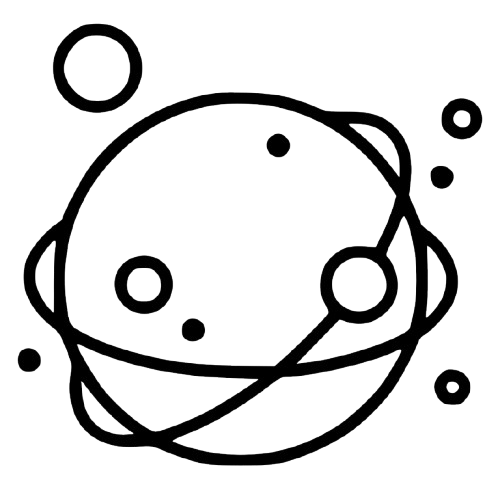

Welcome to my OS
Lock in.
Focus.
A simple operating system made for people who prefer no fun or flavor.

malOS
cookies n creanWelcome to my OS
A simple operating system made for people who prefer no fun or flavor.
